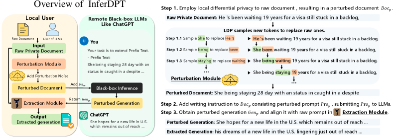
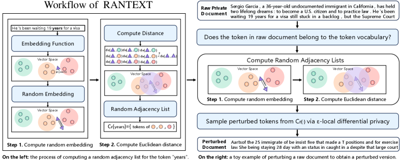

InferDPT performs privacy-preserving inference with a closed-box remote model: the client perturbs its prompt under token-level local differential privacy (RANTEXT), sends the perturbed prompt to the remote model, and reconstructs an aligned output with a local model. This page measures the scheme through three design levers, the privacy budget ε, the embedding map φ, and the local extraction model X, with attack-independent leakage probes (mutual information, plausible deniability, PII survival) paired against reconstruction attacks (embedding inversion, masked-LM inference). The result: on a modern sentence-embedding space the perturbation mechanism reduces to near-uniform substitution at every ε, because the embedding map, not ε, sets the operating point.
research report · 2026-06-29RANTEXT replaces every in-vocabulary token of a document with a semantically near token sampled under ε-local differential privacy, so the perturbed prompt sent to a remote model reveals little about the original. Whether this preserves utility depends on the geometry of the embedding map φ that defines "near". We find that on a modern sentence-embedding space the mechanism collapses: at ε=1 the per-token mutual information between a raw token and its replacement is 0.0 bits, and at every ε the replacement cosine sits at the random-pair floor (0.61), i.e. the replacement is statistically a random token.
Threat model. The remote model is honest-but-curious. The adversary knows the mechanism, the vocabulary V, the embedding map φ, and the budget ε, and attempts to recover the raw tokens from the perturbed text it receives. The local extraction model is trusted and never leaves the client.
Three levers. The privacy–utility outcome is set by (1) the budget ε, which is intended to trade privacy for utility but is largely inert here, (2) the embedding map φ, which sets whether "near" is meaningful and is the binding constraint, and (3) the local extraction model X, which recovers utility downstream and does not affect privacy. The headline finding is that φ dominates: substituting an isotropic LLM input-embedding matrix for the sentence-embedding map removes the anisotropy but lowers perturbation faithfulness further (replacement cosine 0.23 against 0.79), because its distances are even more concentrated.
| Term | Definition |
|---|---|
| Doc / Doc_p | The raw private document and its perturbed version (the prompt sent to the remote model). |
| Gen_p | The remote model's generation on the perturbed prompt. |
| X, Y | Y = the remote closed-box generation model (untrusted). X = the local extraction model (trusted) that reconstructs the aligned output from Doc and Gen_p. |
| φ(·) | The embedding map from a token to a vector. RANTEXT measures token similarity as Euclidean distance in this space. |
| ε | The local-DP budget. Smaller ε gives more privacy. In RANTEXT ε both sets the noise radius and sharpens the sampling distribution. |
| C_r(t) | The random adjacency list: the candidate replacement tokens for t, those within a per-token random radius (the length of a Laplace noise vector) of φ(t). |
| exponential mechanism | Samples a replacement y from C_r with probability proportional to exp(ε/2 · u), u = 1 − d/radius; closer candidates are more likely. |
| S_w / N_w | Plausible-deniability statistics (Feyisetan et al.): S_w = P[M(w)=w] (self-substitution, lower is more private); N_w = number of distinct outputs over repeated runs (higher is more private). |
| token MI | I(X;Y) in bits for the per-token channel, computed from the analytic conditional p(y|x). The attack-independent leakage measure; 0 bits = the replacement is independent of the raw token. |
| replacement similarity (retention) | Mean cosine between an original token and its sampled replacement (0.61 = random baseline, 1.0 = unchanged). Equal to the random baseline means no semantic faithfulness. |
| anisotropy | Mean cosine of random token pairs. 0 = isotropic; large = all vectors share a common direction, which compresses the distance range. |
| PII semantic leakage / reconstruction recall | Presidio detects PII spans in Doc; the probe scores each entity's maximum cosine to the target text. On Doc_p (lower is more private); on the final output (higher is more faithful). |
| embedding inversion | Attack: for each perturbed token return the top-K nearest vocabulary tokens in φ; a hit means the raw token is recovered. recovery@K. |
| masked-LM (BERT) inference | Attack: mask each perturbed token and predict it with a pretrained masked language model from the perturbed context; success if the prediction equals the raw token. |
InferDPT (three modules). (1) The perturbation module tokenises Doc, and for each in-vocabulary token samples a replacement under ε-LDP, producing Doc_p; out-of-vocabulary tokens are discarded. (2) The remote model returns Gen_p = generate(instruction ∥ Doc_p). (3) The extraction module, a local trusted model X, is given the raw Doc as prefix and Gen_p as material, and writes a continuation aligned to Doc. Privacy holds because the remote model only ever sees Doc_p; utility is recovered because X re-grounds on the true Doc.
RANTEXT (per token). Embed the token, eb_t = φ(x). Draw a Laplace noise vector and set the radius to its norm. The candidate set C_r is every vocabulary token whose embedding lies within that radius of eb_t. Score each candidate u = 1 − d/radius and sample one with probability proportional to exp(ε/2 · u). The radius is random per token (the "random adjacency list"), and ε controls both the radius scale and the sampling sharpness.


Measurement loop. For each lever setting we (1) run the full pipeline on a development corpus, (2) compute attack-independent probes on the perturbation and on the outputs, (3) run reconstruction attacks on Doc_p, and (4) read the privacy and utility together. Implementation: src/inferdpt/{rantext,probes,attacks,diagnostics,eval}.py; remote and extraction calls through one OpenAI-compatible client; φ is a cached vocabulary-embedding matrix. The corpus is small (5 documents) and single-seed, so quantitative claims below are preliminary.
Probes are computed without running an attack, so a correlation between a probe and an attack is not circular. Cosine probes use a fixed sentence-embedding scorer on full text (in-distribution), independent of the φ under test, so they are comparable across embedding maps. Each probe states the quantity it bounds.
| measure | type | what it reports | direction |
|---|---|---|---|
| token MI | probe (bits) | I(token;replacement) of the per-token channel; upper-bounds any adversary's per-token recovery via Fano | ↓ private |
| S_w / N_w | probe | self-substitution probability / output support, the plausible-deniability statistics | S_w ↓ · N_w ↑ |
| overlap | probe | content-word survival from Doc into Doc_p (verbatim) | ↓ private |
| PII semantic leakage | probe | maximum cosine of each raw PII entity to Doc_p (Presidio spans) | ↓ private |
| n-gram MI | probe (bits) | empirical MI of aligned raw/perturbed n-grams (local-context proxy; needs a large corpus) | ↓ private |
| utility / utility_control | probe | cos(Doc, output) / cos(non-private generation, output) | ↑ faithful |
| PII reconstruction recall | probe | fraction of raw PII entities recovered in the final (local) output | ↑ faithful |
| embedding inversion | attack | recovery@K: raw token among the K nearest to the perturbed token in φ | ↓ private |
| masked-LM inference | attack | top-1 recovery of the raw token from perturbed context (bert-base-uncased) | ↓ private |
Embedding map: pythia-410m input-embedding matrix (isotropic, anisotropy 0.011), 12k cl100k tokens, cased CNN/Daily Mail (N=60). The setting that controls how aggressively a token is replaced is the noise radius, set by the calibration factor Z(ε). The reference RANTEXT constants for Z are a curve-fit to one token ("happy") in OpenAI's ada-002 space (paper Appendix B), and they mis-size the radius on any other embedding — applied to this map they saturate the candidate set and ε goes inert. We instead refit Z per embedding to a fixed candidate-set target |C_r|/|V| ≈ 1% (the paper's own calibration method, not a per-model fudge of a secondary quantity), so the operating point is held constant and ε is isolated as the only moving knob. Grid ε ∈ {2, 6, 10, 14}.
Conclusion. With the radius calibrated to the embedding (not the ada-002 constants), ε is a genuine, monotone lever. Leakage rises steeply with ε — overlap 0.22 → 0.78, self-substitution S_w 0.20 → 0.66, PII-leak recall 0.13 → 0.57, token leakage 4.6 → 5.2 bits, embedding inversion@10 0.67 → 0.99 across ε 2 to 14 — while the candidate set is held at ~1% throughout, so this is ε acting, not a radius artifact. Perturbation-side fidelity rises in step (replacement cosine 0.51 → 0.97, Gen_p coherence 0.54 → 0.74, u_p_control 0.55 → 0.76): higher ε keeps more of the document's meaning in Doc_p. The final extracted output, by contrast, stays faithful at every ε (reranker utility and PII reconstruction recall ~1.0, SimCSE utility 0.90 → 0.93), because the trusted extraction model re-grounds on the true Doc. So ε trades privacy for perturbation-side fidelity along a clean Pareto curve; because the final output is ε-robust, the practical choice is to run ε as low as the downstream task tolerates. This corrects the earlier reading that ε is inert — that was an artifact of the ada-002 noise constants applied to a different embedding, not a property of the mechanism.
φ enters RANTEXT only through Euclidean distances, so its one structural property is the distance scale. Anisotropy — a large shared direction in every token vector — compresses that scale into a thin shell, with two consequences. First, the noise radius (the Laplace-norm threshold that defines the candidate set C_r, set by Z(ε)) must be matched to the shell. The paper's fixed Z is a curve-fit to one token in ada-002 (§5.1), so on any other φ it mis-sizes: too large and C_r becomes a big slice of V, the sampling goes near-uniform, and Doc_p is word-salad. Second, even at a matched radius the compressed shell blurs the candidate ranking, which trades Doc_p coherence against the inversion attack.
1 · The noise radius is the control. The mechanism's real knob is the size of the noise radius — equivalently the candidate-set fraction |C_r|/V it admits. As the radius shrinks (pythia-410m, the prompt below, ε=6):
| |C_r|/V | perturbed prompt Doc_p |
|---|---|
| 57% | polymer Development templates his Portuguese University samsung women Collins Diego arch yield accused Die partners painter dinner |
| 19% | MY style vase she Bennett car amigos character moderate starts old UK hp stay than pew husband |
| 4% | Mi name avis She Phillips and amigos several thirty became old living within Japan with asian husband |
| 1% | Her name ais William Thompson of ama five fourth days old living by Canada with mead husband |
original: "My name is Sarah Johnson and I am thirty four years old living in Boston with my husband." — pythia-410m, ε=6, seed 1. At a large radius the candidate set is most of V, sampling is near-uniform, and Doc_p is word-salad — the failure our initial runs hit. RANTEXT's Z(ε) is a per-embedding curve-fit (paper Appendix B) that targets a small |C_r|; matched to ≈1% the original's structure returns (name→name Sarah Johnson→William Thompson, Boston→Canada).
2 · At the matched radius (|C_r|≈1%), across φ and ε. Three private prompts, each perturbed by ada-002 (paper φ, anisotropic), pythia-410m (isotropic), and qwen3-embedding (sentence embedder, anisotropic). The isotropic map stays more readable; the anisotropic maps scramble harder at the same |C_r|; higher ε keeps more of the original everywhere.
P1 original: "My name is Sarah Johnson and I am thirty four years old living in Boston with my husband."
| φ | ε=2 | ε=6 | ε=10 |
|---|---|---|---|
| ada-002 | My nome should and i aw twenty six different Living inner Boston with My journalist | My nome is and i am thirty four old living input Boston with my desk | My Name is and i am thirty four old living in Boston with my husband |
| pythia-410m | myself word avis William Thompson of amigo ten Seven Year old living IN LA with mead husband | Her name ais William Thompson of ama five fourth days old living by Canada with mead husband | My name were George Wilson and am Four four years old living in Angeles with mead husband |
| qwen3-emb | mai es mall she Reynolds find mend an Four decades age living PE Washington condition junction brother | vie et Besides she Reynolds under hem st Four age old living gate Washington od junction husband | personal name mane She Tyler us oz from fir years old living AG Chicago With zen husband |
P2 original: "The patient was diagnosed with diabetes and depression by her psychiatrist at Mercy Hospital."
| φ | ε=2 | ε=6 | ε=10 |
|---|---|---|---|
| ada-002 | What patron something WITH diabetes and Psych were she ANT clinic | This applicant want along diabetes and suicide they her AT Airport | The viewer was with diabetes and depression by her at Hospital |
| pythia-410m | His sample ais patients tote cancer or mental BY She with medical | An hospital Was patients tote cancer and symptoms using her at Hotel | The patient were cancer ais diabetes and depression by her at Hospital |
| qwen3-emb | pairs patients WORK disease utter disease vice death ting toward into hospital | NA patient worthy disease utter diseases blind pain Ana iron about Hospital | HERE patient WA disease ions diabetes Nu suffering bid Hen are Hospital |
P3 original: "He works as a lawyer at Goldman Sachs and earns two hundred thousand dollars a year in Chicago."
| φ | ε=2 | ε=6 | ε=10 |
|---|---|---|---|
| ada-002 | she works as s servant AT or single six monthly o inch in | He works as a regulator at and down billion thousand a decade in | He works as a litigation at and two hundred thousand a player in |
| pythia-410m | Her works asian law ford of eight several fifty millions years that Vegas | You works andre law ford of six five millions dollars year in Arizona | He works como court At and two hundred thousand dollars year in Chicago |
| qwen3-emb | ink works equality law zen find orient your thousands dollar year UN NH | ama works ups law ALSO under divided all thou dollars year Imp Atlanta | Hal works differently Law td us combined per thousand dollars year pare Toronto |
source: RANTEXT at |C_r|≈1% (per-φ calibrated Z), cased prompts, seed 1. Names swap to names and cities to cities where they are in-vocab (Sarah Johnson→George Wilson, Boston→Chicago/LA); out-of-vocab spans (Goldman Sachs, Mercy) drop; in-vocab sensitive words (diabetes, depression) survive at high ε — the no-detector limitation.
Conclusion. φ's leverage is the distance scale, set by anisotropy — not an end-to-end utility lever (final utility is flat, extraction-dominated). It acts in two ways: (a) a calibration constraint — the noise radius must be refit per φ or the mechanism degenerates to salad — and (b) at a matched radius, a coherence↔attack-resistance trade. Neither pole is free: isotropic buys readable Doc_p at the cost of a working inversion attack; anisotropic buys attack-degradation at the cost of coherence.
Remote model fixed (gemma-4-E4B), φ = qwen3-embedding, ε=3. The local extraction model X is varied. Higher-capability X raises utility while the privacy measures, set upstream by the perturbation, are unchanged. PII reconstruction recall is high for both, because X re-grounds on the true Doc, which it is trusted to see.
| extraction model X | utility (cos Doc,out) | utility_control (cos control,out) | PII reconstruction recall |
|---|---|---|---|
| gemma-4-E4B | 0.646 | 0.587 | 0.917 |
| Qwen3.6-35B-A3B | 0.747 | 0.632 | 0.917 |
source: extraction-model sweep (Y=gemma-4-E4B fixed, 4 documents). Paper Table IX reports the analogous local-model effect (Vicuna-7b, Llama2-7b, Llama3.1-8b).
Conclusion. X recovers utility and does not affect privacy. It is the utility end of the design space, separate from the privacy end set by ε and φ.
The paper uses a different configuration: remote model GPT-4, embedding map text-embedding-ada-002, vocabulary the first 11k English cl100k tokens, extraction model Vicuna-7b/Llama. Its embedding map has usable distance range (Table V distances move with ε), where ours is concentrated. The numbers below are reference context, not a head-to-head comparison.
| InferDPT + RANTEXT (CNN/Daily Mail) | ε=1 | ε=2 | ε=3 | GPT-4 (non-private) |
|---|---|---|---|---|
| MAUVE ↑ | 0.542 | 0.563 | 0.587 | 0.671 |
| coherence ↑ | 0.723 | 0.735 | 0.736 | 0.632 |
| diversity ↑ | 0.970 | 0.970 | 0.971 | 0.983 |
Privacy protection (paper). With ε=6 and top-10 embedding inversion, RANTEXT reports an average protection level above 0.90, against 0.58× for SANTEXT+ and 3.35× for CUSTEXT+. Against masked-LM inference RANTEXT exceeds 80% protection across ε from 0.01 to 18. Our masked-LM top-1 recovery is near zero and embedding inversion@10 is 0.13–0.19, consistent with strong perturbation, but our utility is the part that does not transfer: with a concentrated embedding map the replacement is near-random, so the perturbed generation carries little of the document's themes and the apparent utility comes from the extraction model re-grounding on Doc.
Reading the two together. The paper attains both privacy and utility because ada-002 gives a usable distance range; on a concentrated sentence-embedding space the same mechanism keeps the privacy but loses the perturbation-side utility. This is the embedding-map dependence the paper did not have to confront.
Embedding geometry, not ε, is the binding constraint (Supported). On the qwen3-embedding map, at the paper noise scale, per-token mutual information is 0.0 bits at ε=1 and the replacement similarity stays at the random baseline at every ε; the candidate set is the whole vocabulary regardless of ε. Grounds: §5.1. Scope: single embedding map, small corpus, single seed.
Anisotropy is harmful but isotropy is insufficient (Supported). The isotropic LLM matrix (anisotropy 0.019) is more distance-concentrated (relative spread 0.020) and reconstructs less faithfully (retention 0.227 against 0.788). Grounds: §5.2. The binding requirements are distance dynamic range and synonym-structured neighbourhoods, not isotropy alone.
The extraction model is a utility-only lever (Supported). A stronger X raises utility from 0.646 to 0.747 with the privacy measures unchanged. Grounds: §5.3.
The studied reconstruction attacks are weak against the perturbation (Preliminary). Masked-LM top-1 recovery is near zero and embedding inversion@10 is 0.13–0.19; the realistic worst case is a context-aware language-model reconstruction, which is documented but not yet run.
Why ε is inert. The replacement faithfulness is governed by the candidate set and the score range. With unit-normalised embeddings the pairwise distances concentrate in a thin shell (1st to 99th percentile 0.67 to 1.04, relative spread 0.089). The Laplace noise norm over 1024 dimensions is about 2.0, which exceeds the shell, so the candidate set is all of V and the score u = 1 − d/radius is nearly constant; the exponential mechanism is then close to uniform. The calibration factor Z(ε) saturates for ε ≥ 2, so even the radius barely moves with ε. The replacement cosine therefore equals the random-pair floor (0.61), which is itself a consequence of anisotropy (a large shared component inflates every cosine).
What the per-token MI bounds, and its limit. The channel p(y|x) is analytic, so I(token;replacement) is computed directly in bits; by Fano it upper-bounds any adversary's per-token recovery. RANTEXT is memoryless, so total leakage is bounded by the sum of per-token MI, but recovery of a single token from the whole perturbed sequence can exceed the per-token value, because the source is correlated: I(x_i; Y_{1..n}) ≥ I(x_i; Y_i). A context-aware language-model adversary exploits exactly this. The honest measure of that is usable (V-)information, which is documented and deferred (it requires the language-model reconstruction attack and a no-context control). See docs/research/mi-probes.md.
Operating window. On a concentrated embedding map there is no ε that gives both privacy and perturbation-side utility: small ε and large ε both produce near-random replacements, and the final utility comes from the trusted extraction model, not from the remote model's themes. The corrective lever is the embedding map, not the budget.
The fix axis (deferred). The candidate documentation identifies counter-fitted static vectors (synonym-structured), whitening of any embedding map (all-but-the-top), and a rank-based candidate set (k nearest, immune to distance concentration) as the directions that restore a usable distance range. See docs/perturbation-sota.md.
Limitations. The corpus is 5 documents and single-seed, so the quantitative results are preliminary. The n-gram MI estimate is unreliable at this corpus size. The strongest attack (context-aware language-model reconstruction) and the V-information leakage probe are documented but not yet run. PII semantic-leakage degree is floored by anisotropy and reported only as recall.